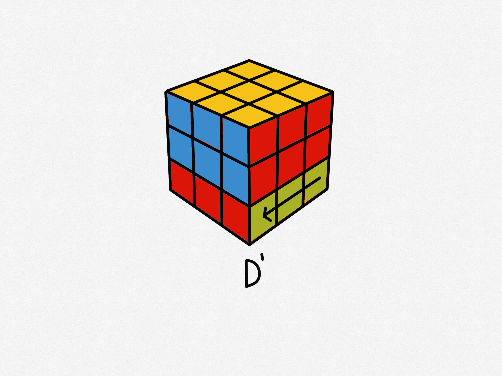
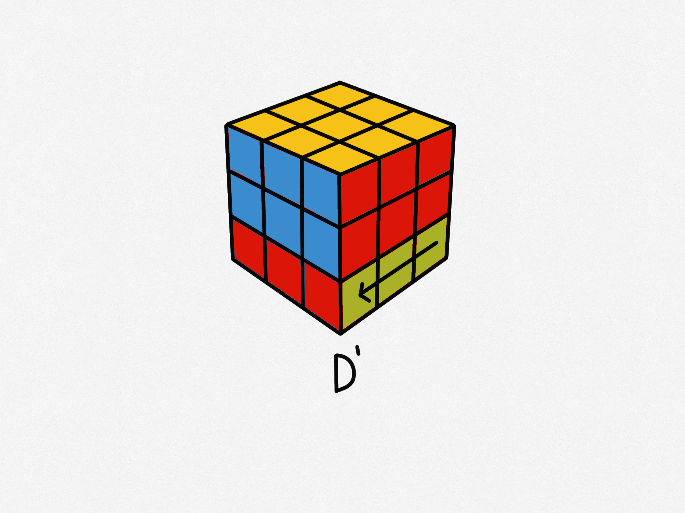
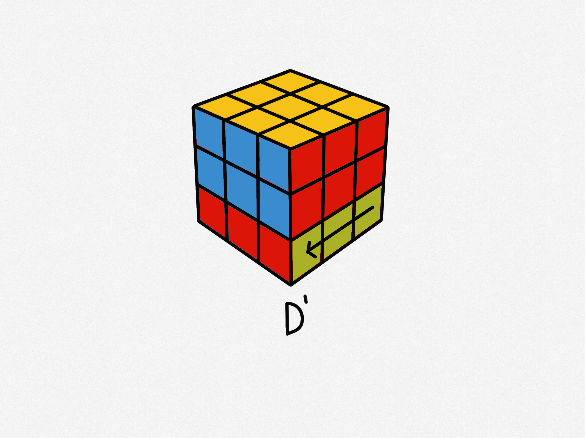

The basic moves that you need to know are:Up, Down, Right Left, Front, Back This means that each layer has a specific name and is usually represented by the starting letter, so memorize the names and layers properly.
 

The basic moves that you need to know are:Up, Down, Right Left, Front, Back This means that each layer has a specific name and is usually represented by the starting letter, so memorize the names and layers properly.
There are also counterclockwise movements, they are the basic moves but in the opposite direction. They are represented with a apostrophe (‘ )

We can also move two layers at once, the notation seems a bit more complex but is fairly simple. Might be harder to memorize because there two ways to write each move. Either lowercase letter or an uppercase letter which follows with a “w”.